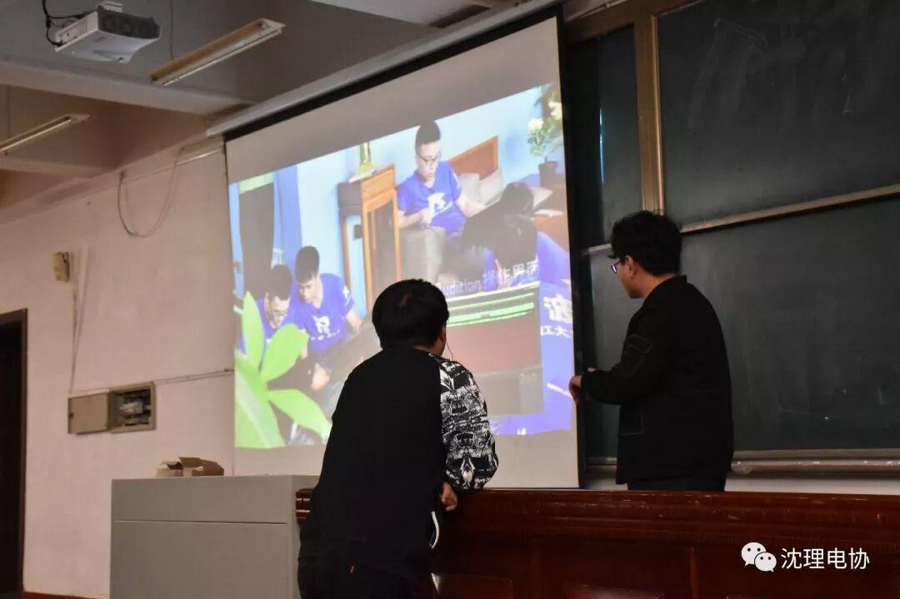
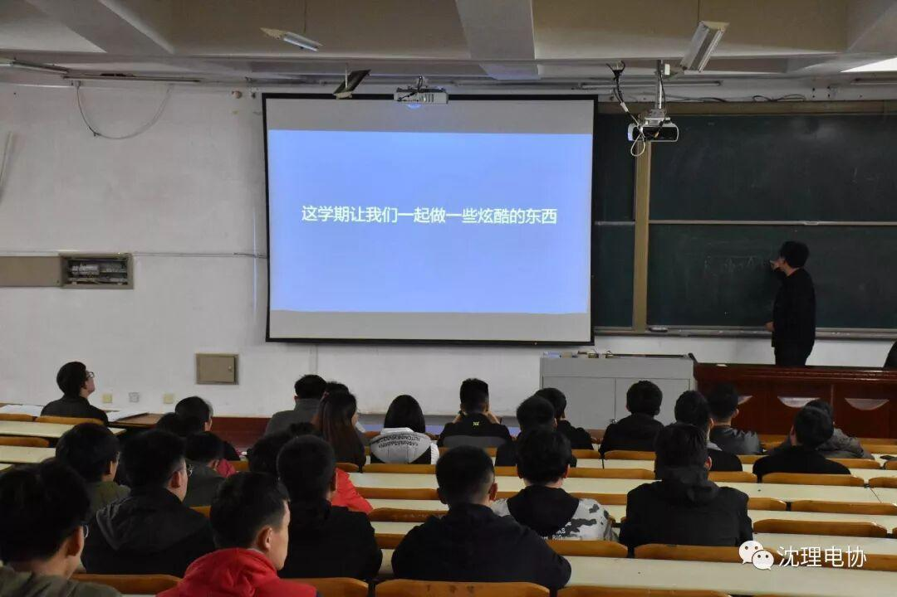
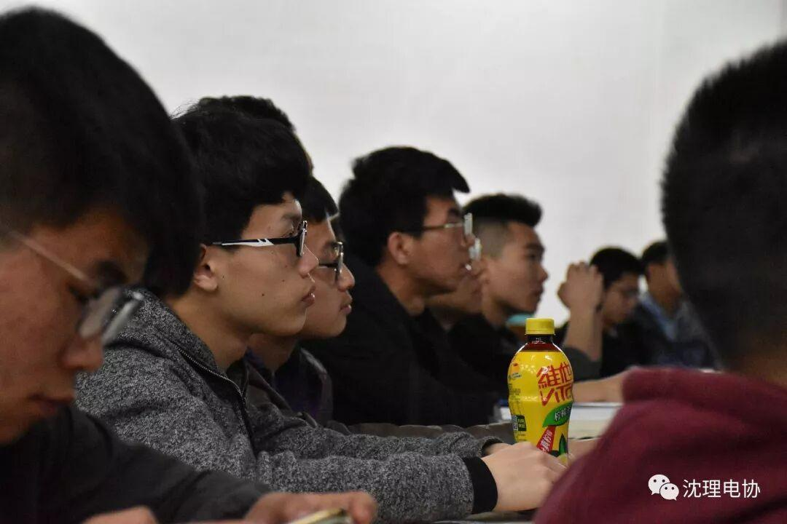
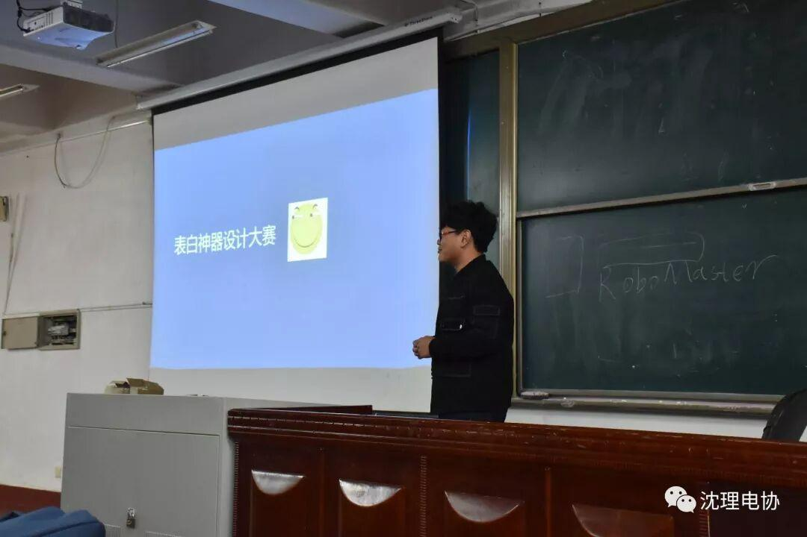

下学期第一次教学
俏春已至，沈理依旧没有收到她多么温柔的呵护，但学长清朗的声音却像火一般，触动着莘莘电协成员的心弦。
今天又迎来了我们阔别已久的大课堂，与往日不同，这次的讲课是为了给以后的教学和讲课作铺垫，主要讲了我们本学期将会学到的知识、举办的活动。
课堂要开始时，学长播放了名为“超能理工派”的综艺节目的一些片段，那里面各个风华正茂又怀揣梦想的少年，机灵的头脑，熟练的操作，沉思的认真，深深吸引着我们，不禁膜拜此等大神，心中向往，片段结束时，我们还意犹未尽。


后来学长又列了一些以后会用到的技术知识，并进行了大体的介绍，我们聚精会神地听着，生怕有一丝错过。

最后，学长剧透了，关于我们五月份将要举办的活动，学长在放出下一张页面前，神色紧张又有些许羞涩，絮絮叨叨说了很多，但似乎过多的描述都显得苍白，唯有一见——

本次教学虽无具体可说的所学，却有着很明确的规划，把日后的内容摆在我们眼前，一切都安排得井井有条，让我们在惊喜与期待中缓缓度过，相信日后的教学会更加精彩，电协更令人刮目！
编辑：罗杰
图片：信息部成员